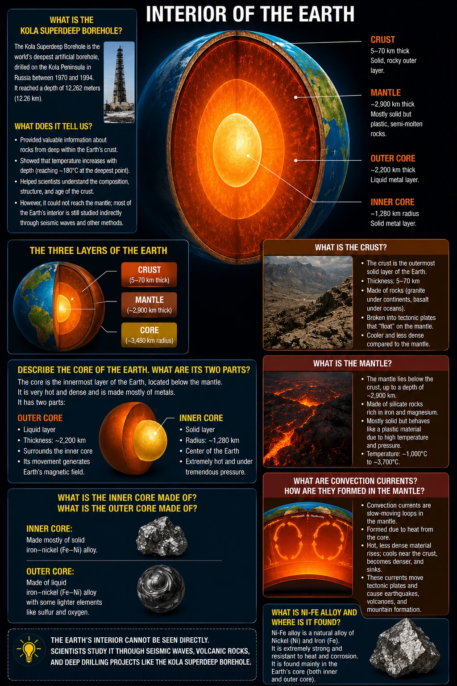
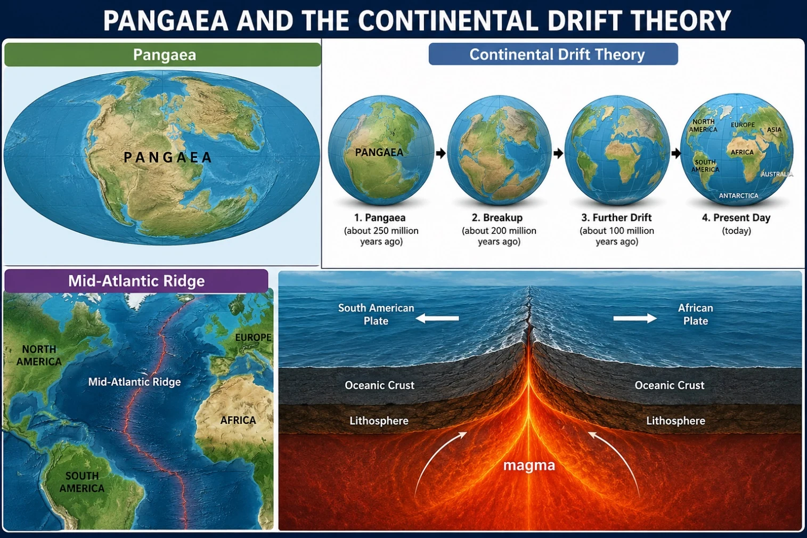
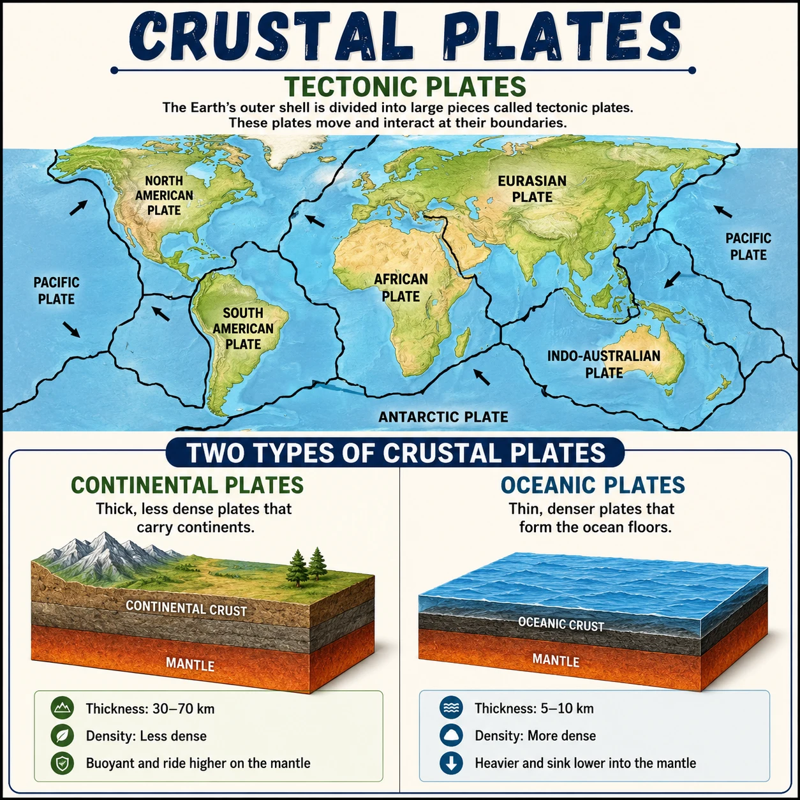
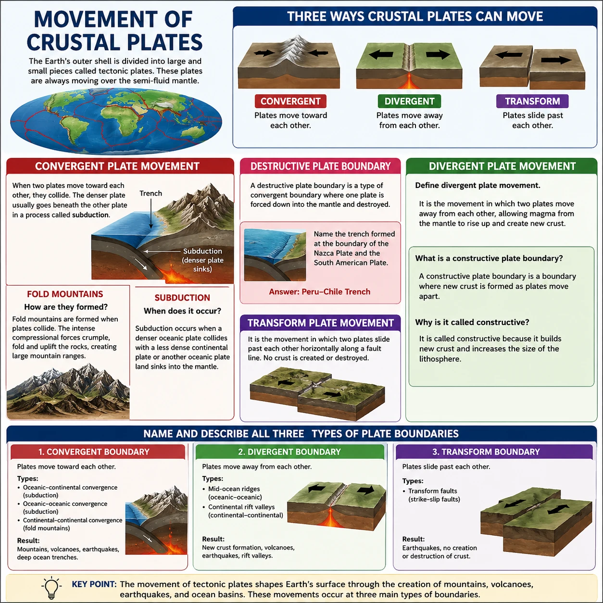
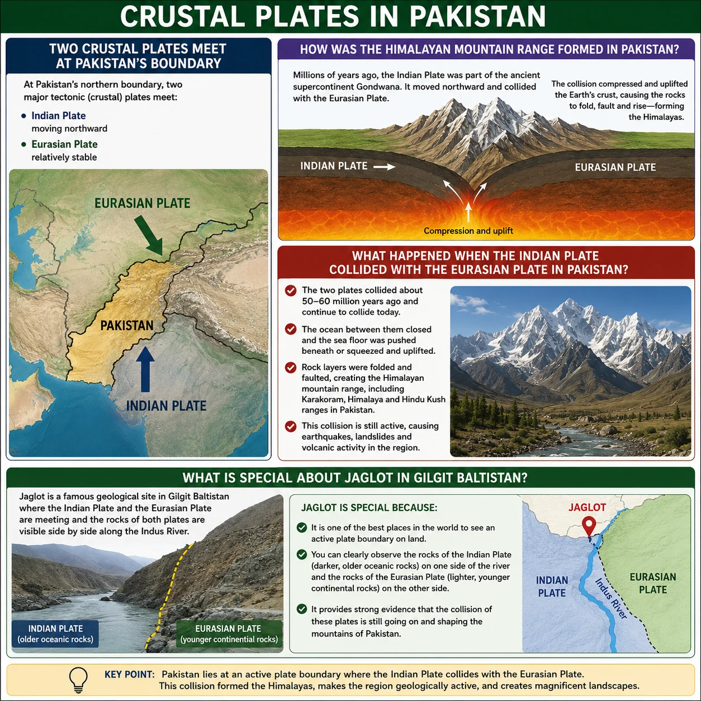
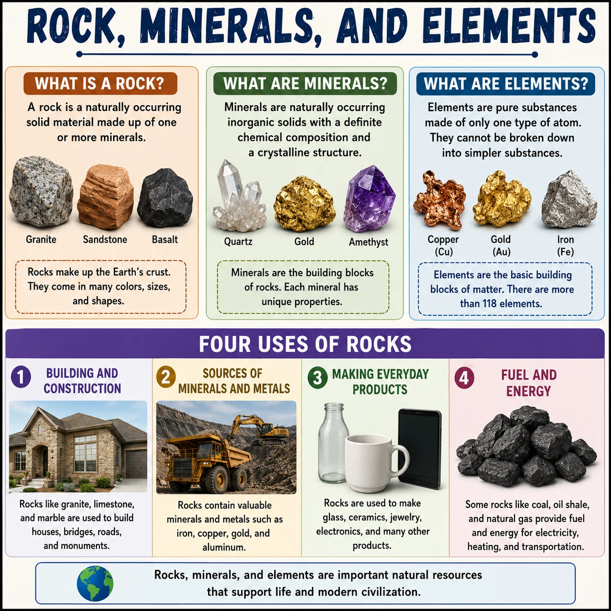
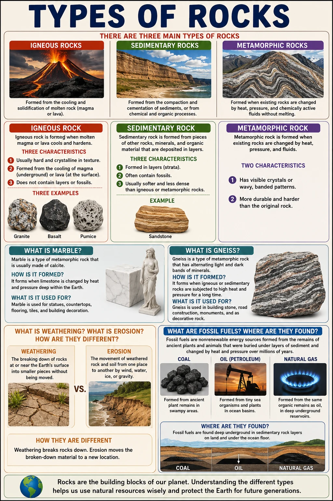

Chapter Overview
Key skills you will develop by the end of Chapter 1: Structure of Earth and Types of Rocks.
Geography: Structure of Earth and Types of Rocks
Complete chapter notes with all 12 topic Q&As, diagrams, and vocabulary — PDF format
Please note: This page is a concise preview. The complete notes with all 12 topic Q&As, diagrams, and Pakistan-specific content are available in the PDF exclusively for enrolled students.
Chapter Diagrams
High-quality illustrated diagrams from W.H. Academy Class 6 Geography notes.







Geography & Earth's Interior
What is geography, the branches, and the structure of the Earth.
What is Geography?
1. What is geography? What are its three main branches?
Three main branches:
1. Physical Geography — study of the Earth's natural features (land, mountains, rivers, climate, soil)
2. Human Geography — study of people and their activities (population, settlement, economic activity)
3. Environmental Geography — study of how people interact with nature (mining, pollution, climate change)
2. What is the difference between weather and climate?
Climate is the average weather conditions recorded at a particular place over many years — usually more than 30 years.
Interior of the Earth
3. Name and describe the three layers of the Earth.
1. Crust — outermost layer; 5–60 km thick; rigid and broken into plates; thin under oceans (~5 km), thick under continents (~40 km)
2. Mantle — below the crust; ~2,000 km thick; semi-solid rocks; temperature ~1,000°C; contains convection currents that move the plates
3. Core — innermost part; divided into:
• Outer Core: ~2,250 km thick; liquid nickel and iron (Ni-Fe alloy); ~4,400°C
• Inner Core: ~1,250 km thick; solid iron; >5,430°C (solid despite extreme heat because of enormous pressure)
4. What are convection currents? How do they cause plate movement?
Pangaea, Plates & Pakistan
Continental Drift Theory, plate boundaries, and Pakistan's seismic zones.
Continental Drift and Tectonic Plates
5. What is Pangaea? What is the Continental Drift Theory?
The Continental Drift Theory was proposed by Alfred Wegener in 1912. He argued that all continents were once joined together and have been slowly drifting apart over millions of years. Evidence includes: matching coastlines, similar fossils on separate continents, and identical rock formations on different continents.
6. What are the three types of tectonic plate boundaries and what happens at each?
2. Divergent Boundary — plates move APART → mid-ocean ridges and rift valleys form
3. Transform Boundary — plates slide PAST each other → earthquakes occur (e.g. San Andreas Fault)
7. Why is Pakistan prone to earthquakes? What are its major fault lines?
Major fault lines in Pakistan include the Chaman Fault and the Makran Subduction Zone. The 2005 Kashmir earthquake was caused by the collision of the Indian Plate with the Eurasian Plate.
Rocks, Minerals & The Rock Cycle
Elements, minerals, rock classification, and the rock cycle.
Types of Rocks
8. What are the three types of rocks? Define each one.
2. Sedimentary Rocks — formed by layers of sediment (sand, mud, shells) being compressed over time. Examples: sandstone, limestone, shale. Often contain fossils.
3. Metamorphic Rocks — formed when existing rocks are changed by extreme heat and pressure deep inside the Earth. Examples: marble (from limestone), slate (from shale)
9. What is the rock cycle?
Magma cools → Igneous rock → weathered and eroded → sediments deposited → compressed → Sedimentary rock → subjected to heat and pressure → Metamorphic rock → melted into magma again → cycle continues
10. What are GIS, GPS, and Google Maps? How are they used in geography?
GPS (Global Positioning System) — a satellite-based system that gives the exact location of any point on Earth using latitude and longitude.
Google Maps — a digital mapping tool that uses satellite imagery and GPS data to help people navigate and explore geographic information.
These technologies are used for: urban planning, disaster management, land surveys, navigation, and tracking environmental change.
Key Terms
Important vocabulary for Chapter 1.
| Term | Simple Meaning |
|---|---|
| Geography | The study of the Earth, its land, and the people living on it |
| Crust | The outermost and thinnest layer of the Earth; 5–60 km thick; broken into plates |
| Mantle | The layer below the crust; ~2,000 km thick; made of semi-solid rocks at ~1,000°C |
| Core | The innermost part of the Earth; divided into the outer core (liquid) and inner core (solid) |
| Ni-Fe alloy | A mixture of nickel and iron that makes up the outer core |
| Convection currents | Circular heat movements in the mantle that cause tectonic plates to move |
| Pangaea | The ancient supercontinent; all of Earth's land was once joined together as Pangaea |
| Continental Drift | Alfred Wegener's theory that continents were once one landmass and have slowly drifted apart |
| Tectonic plates | Large pieces of the Earth's crust that move slowly on the mantle |
| Igneous rock | Rock formed from cooled and solidified magma or lava |
| Sedimentary rock | Rock formed from compressed layers of sediment over time; often contains fossils |
| Metamorphic rock | Rock transformed by extreme heat and pressure inside the Earth |
| GIS | Geographic Information System — computer system for mapping and analyzing geographical data |
| GPS | Global Positioning System — satellite system giving exact locations on Earth |
Want Full Chapter Notes & Expert Guidance?
Enroll with W.H. Academy for complete chapter-by-chapter notes, personalized tutoring, and exam preparation by M. Rehan Safdar.